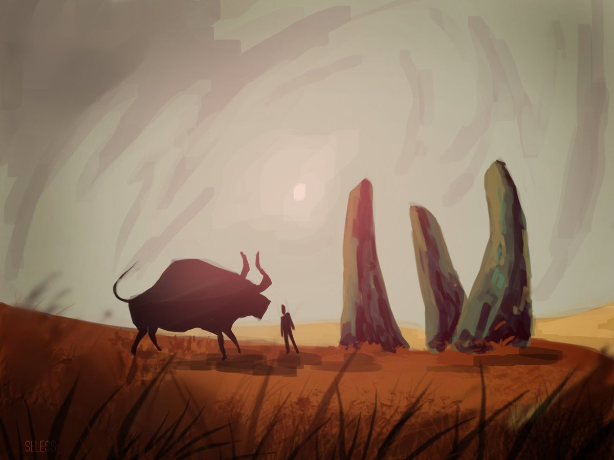
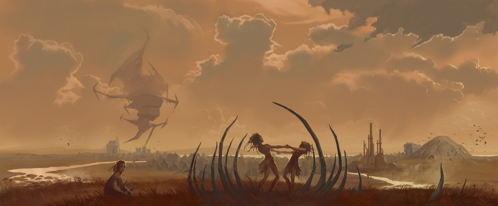
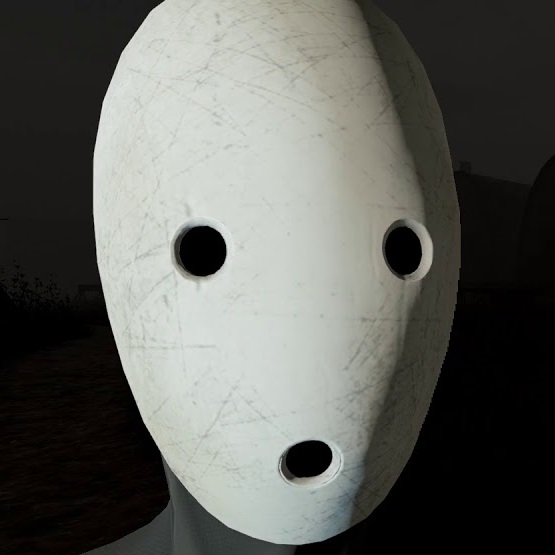

Мор (Pathologic 2 за пределами СНГ) — компьютерная игра, разрабатываемая российской студией Ice-Pick Lodge. «Мор» является расширенным ремейком игры «Мор (Утопия)» 2005 года от тех же разработчиков; подобно оригинальной игре, «Мор» должен совмещать в себе элементы жанров квеста, action, компьютерной ролевой игры и симулятора выживания.  Сами разработчики характеризуют жанр игры как «симулятор выживания в условиях эпидемии», утверждая, что в будущей игре достаточно изменений и новшеств, чтобы назвать её отдельной игрой, а не ремейком. В отличие от оригинала, «Мор» будет разделён на 3 части — по одной на каждого персонажа. Первая история была выпущена 23 мая 2019 года.
Действие игры разворачивается в неком степном городе, расположенном на вымышленной реке Горхон (в связи с чем его могут называть Городом-на-Горхоне). Местная культура представляет собой слияние русских и степных традиций. Культура степняков, как и в оригинале, отчасти вдохновлена бурятской культурой: в частности, многие персонажи игры используют в своей речи слова и даже целые фразы на бурятском языке — например, главного героя степняки называют бурятским словом «эмшэн» — «доктор» (что было представлено ещё в оригинальной игре — в частности, в  одной из локаций можно было слышать голос Исидора Бураха, говорящего на бурятском языке, кроме того, один из трейлеров HD-переиздания Мор (Утопии) был также на бурятском языке). Помимо людей, игроку будут встречаться также разумные гуманоидные существа одонги (они же «черви»), а изредка — ещё более странные создания. Точную временную эпоху действия игры, как и в оригинале, установить сложно.
Игра начинается с последнего, двенадцатого дня. Загадочный персонаж по имени Марк Бессмертник говорит главному герою, что предыдущая постановка обернулась провалом, поэтому все придётся начинать сначала. Затем один из Исполнителей, людей в странных птицевидных костюмах, направляет главного героя в Собор, где будет принято окончательное решение о судьбе Города-на-Горхоне. Протагонист идёт по практически вымершему городу, где кругом лежат трупы умерших от чумы, горят дома и бегают тарбаганчики. Большую часть живых людей в городе составляют патрульные солдаты из столицы. Их главнокомандующий Александр Блок вместе с инквизитором Аглаей Лилич встречают главного героя в Соборе и решительно отвергают все его попытки спасти город от уничтожения артиллерией (для предотвращения дальнейшего распространения заразы). После чего появляется Марк Бессмертник и даёт протагонисту возможность начать все заново.
Подробнее см. 